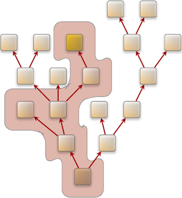

We are surrounded by operating systems. Each device where multiple software functions are consolidated on a single CPU employs some sort of operating system that multiplexes the physical CPU for the different functions. In our age when even mundane household items get connected to the internet, it becomes increasingly hard to find devices where this is not the case.
Our lives and our society depend on an increasing number of such devices. We have to trust them to fulfill their advertised functionality and to not perform actions that are against our interests. But are those devices trustworthy? In most cases, nobody knows that for sure. Even the device vendors are unable to guarantee the absence of vulnerabilities or hidden functions. This is not by malice. The employed commodity software stacks are simply too complex to reason about them. Software is universally known to be not perfect. So we have seemingly come to accept the common practice where vendors provide a stream of software and firmware updates that fix vulnerabilities once they become publicly known. Building moderately complex systems that are free from such issues appears to be unrealistic. Why is that?
The past decades have provided us with enough empirical evidence about the need to be pragmatic about operating-system software. For example, high-assurance systems are known to be expensive and struggle to scale. Consequently, under cost pressure, we can live without high assurance. Security is considered as important. But at the point where the user gets bothered by it, we have to be willing to compromise. Most users would agree that guaranteed quality of service is desirable. But to attain good utilization of cheap hardware, we have to sacrifice such guarantees. Those universal truths have formed our expectations of commodity operating system software.
In markets where vendors are held liable for the correctness of their products, physical separation provides the highest assurance for the independence and protection of different functions from each other. For example, cars contain dozens of electronic control units (ECU) that can be individually evaluated and certified. However, cost considerations call for the consolidation of multiple functions on a single ECU. At this point, separation kernels are considered to partition the hardware resources into isolated compartments. Because the isolation is only as strong as the correctness of the isolation kernel, such kernels must undergo a thorough evaluation. In the face of being liable, an oversight during the evaluation may have disastrous consequences for the vendor. Each line of code to be evaluated is an expense. Hence, separation kernels are minimized to the lowest possible complexity - up to only a few thousand lines of code.
The low complexity of separation kernels comes at the cost of being inflexible. Because the hardware resources are partitioned at system-integration time, dynamic workloads are hard to accommodate. The rigidity of the approach stands in the way whenever the number of partitions, the assignment of resources to partitions, and the software running in the partitions have to be changed at runtime.
Even though the high level of assurance as provided by separation kernels is generally desirable, flexibility and the support for dynamic workloads is even more so. For this reason, commodity general-purpose OSes find their way into all kinds of devices except into those where vendors are held liable for the correctness of their products. The former include not only household appliances, network gear, consumer electronics, mobile devices, and certain comfort functions in vehicles but also the IT equipment of governments, smart-city appliances, and surveillance systems. To innovate quickly, vendors accept to make their products reliant on highly complex OS foundations. The trusted computing base (TCB) of all commodity general-purpose operating systems is measured in millions of lines of code. It comprises all the software components that must be trusted to not violate the interests of the user. This includes the kernel, the software executed at the system start, all background services with system privileges, and the actual application software. In contrast to separation kernels, any attempt to assess the correct functioning of the involved code is shallow at best. The trustworthiness of such a system remains uncertain to vendors and users alike. The uncertainty that comes with the staggering TCB complexity becomes a problem when such systems get connected to the internet: Is my internet router under control of a bot net? Is my mobile phone remotely manipulated to wiretap me? Is my TV spying on me when switched off? Are my sensitive documents stored on my computer prone to leakage? Faithfully, we hope the answers to those question to be no. But because it is impossible to reason about the trusted computing base of the employed operating systems, there are no answers.
Apparently, the lack of assurance must be the price to pay for the accommodation of feature-rich dynamic workloads.
The ease of use of software systems is often perceived as diametrical to security. There are countless mundane examples: Remembering passwords of sufficient strength is annoying. Even more so is picking a dedicated password for each different purpose. Hence, users tend to become lax about choosing and updating passwords. Another example is OpenPGP. Because setting it up for secure email communication is perceived as complicated, business-sensitive information is routinely exchanged unencrypted. Yet another example is the lack of adoption of the security frameworks such as SELinux. Even though they are readily available on commodity OS distributions, comprehending and defining security policies is considered as a black art, which is better left to experts.
How should an operating system strike the balance between being unusably secure and user-friendly insecure?
Current-generation general-purpose OSes are designed to utilize physical resources like memory, network bandwidth, computation time, and power in the best way possible. The common approach to maximize utilization is the over-provisioning of resources to processes. The OS kernel pretends the availability of an unlimited amount of resources to each process in the hope that processes will attempt to allocate and utilize as much resources as possible. Its holistic view on all processes and physical resources puts the kernel in the ideal position to balance resources between processes. For example, if physical memory becomes scarce, the kernel is able to uphold the illusion of unlimited memory by temporarily swapping the memory content of inactive processes to disk.
However, the optimization for high utilization comes at the price of indeterminism and effectively makes modern commodity OSes defenseless against denial-of-service attacks driven by applications. For example, because the network load is not accounted to individual network-using applications, a misbehaving network-heavy application is able to degrade the performance of other network applications. As another example, any GUI application is able to indirectly cause a huge memory consumption at the GUI server by creating an infinite amount of windows. If the system eventually runs out of memory, the kernel will identify the GUI server as the offender.
With the help of complex heuristics like process-behaviour-aware schedulers, the kernel tries hard to uphold the illusion of unlimited resources when under pressure. But since the physical resources are ultimately limited, this abstraction is destined to break sooner or later. If it breaks, the consequences may be fatal: In an out-of-memory situation, the last resort of the kernel is to rampage and kill arbitrary processes.
Can an operating system achieve high resource utilization while still being dependable?
Surprisingly, by disregarding the practical considerations of existing commodity operating systems, the contradictions outlined above can be resolved by a combination of the following key techniques:
as a middle ground between separation kernels and monolithic kernels are able to accommodate dynamic workloads without unreasonably inflating the trusting computing base.
supposedly makes security easy to use by providing an intuitive way to manage authority without the need for an all-encompassing and complex global system policy.
of software components aids the deconstruction of complex software into low-complexity security-sensitive parts and high-complexity parts. The latter no longer need to be considered as part of the trusted computing base.
can bridge the gap between applications that expect current-generation OSes and a new operating-system design.
within hierarchical organizations shows how limited resources can be utilized and still be properly accounted for.
None of those techniques is new by any means. However, they have never been used as a composition of a general-purpose operating system. This is where Genode comes into the picture.
|  |
|
Application-specific trusted computing base
|
A Genode system is structured as a tree of components where each component (except for the root of the tree) is owned by its parent. The notion of ownership means both responsibility and control. Being responsible for its children, the parent has to explicitly provide the resources needed by its children out of its own resources. It is also responsible to acquaint children with one another and the outside world. In return, the parent retains ultimate control over each of its children. As the owner of a child, it has ultimate power over the child's environment, the child's view of the system, and the lifetime of the child. Each child can, in turn, have children, which yields a recursive system structure. Figure img/app_specific_tcb illustrates the idea.
At the root of the tree, there is a low-complexity microkernel that is always part of the TCB. The kernel is solely responsible to provide protection domains, threads of execution, and the controlled communication between protection domains. All other system functions such as device drivers, network stacks, file systems, runtime environments, virtual machines, security functions, and resource multiplexers are realized as components within the tree.
The rigid organizational structure enables the system designer to tailor the trusted computing base for each component individually. For example, by hosting a cryptographic function nearby the root of the tree, the function is exposed only to the microkernel but not to complex drivers and protocol stacks that may exist in other branches of the tree. Figure img/app_specific_tcb illustrates the TCB of one leaf node. The TCB of the yellow component comprises the chain of parents and grandparents because it is directly or indirectly owned by them. Furthermore, the TCB comprises a service used by the component. But the right branch of tree is unrelated to the component and can thereby disregarded from the yellow component's TCB.
Unlike traditional operating systems, Genode does not abstract from physical resources. Instead, each component has a budget of physical resources assigned by its parent. The budget allows the component to use the resources within the budget or to assign parts of its budget to its children. The usage and assignment of budgets is a deliberative decision by each component rather than a global policy of the OS kernel. Components are able to trade resource budgets along the branches of the tree. This way, components can offer services to other components without consuming their own resources. The dynamic trading of resource budgets between components allows for a high resource utilization without the over-provisioning of resources. Consequently, the system behavior remains deterministic at all times.
The Genode OS framework is the implementation of the Genode architecture. It is a tool kit for building highly secure special-purpose operating systems. It scales from embedded systems with as little as 4 MB of memory to highly dynamic general-purpose workloads.
The system is based on a recursive structure. Each program is executed in a dedicated sandbox and gets granted only those access rights and resources that are required to fulfill its specific purpose. Programs can create and manage sub-sandboxes out of their own resources, thereby forming hierarchies where policies can be applied at each level. The framework provides mechanisms to let programs communicate with each other and trade their resources, but only in strictly-defined manners. Thanks to this rigid regime, the attack surface of security-critical functions can be reduced by orders of magnitude compared to contemporary operating systems.
The framework aligns the construction principles of microkernels with Unix philosophy. In line with Unix philosophy, Genode is a collection of small building blocks, out of which sophisticated systems can be composed. But unlike Unix, those building blocks include not only applications but also all classical OS functionalities including kernels, device drivers, file systems, and protocol stacks.
Genode supports the x86 (32 and 64 bit), ARM (32 bit), and RISC-V (64 bit) CPU architectures. On x86, modern architectural features such as IOMMUs and hardware virtualization can be utilized. On ARM, Genode is able to take advantage of TrustZone and virtualization technology.
Genode can be deployed on a variety of different kernels including most members of the L4 family (NOVA, seL4, Fiasco.OC, OKL4 v2.1, L4ka::Pistachio, L4/Fiasco). Furthermore, it can be used on top of the Linux kernel to attain rapid development-test cycles during development. Additionally, the framework is accompanied with a custom microkernel that has been specifically developed for Genode and thereby further reduces the complexity of the trusted computing base compared to other kernels.
Genode supports virtualization at different levels:
On NOVA, faithful virtualization via VirtualBox allows the execution of unmodified guest operating systems as Genode subsystems. Alternatively, the Seoul virtual machine monitor can be used to run unmodified Linux-based guest OSes.
With Noux, there exists a runtime environment for Unix software such as GNU coreutils, bash, GCC, binutils, and findutils.
On ARM, Genode can be used as TrustZone monitor, or as a virtual machine monitor that facilitates ARM's virtualization extensions.
There exist hundreds of ready-to-use components such as
Device drivers for most common PC peripherals including networking, storage, display, USB, PS/2, Intel wireless, and audio output.
Device drivers for a variety of ARM-based SoCs such as Texas Instruments OMAP4, Samsung Exynos5, and FreeScale i.MX.
A GUI stack including a low-complexity GUI server, window management, and widget toolkits such as Qt5.
Networking components such as TCP/IP stacks and packet-level network services.
Genode is commercially supported by the German company Genode Labs GmbH, which offers trainings, development work under contract, developer support, and commercial licensing:
The framework is available under two flavours of licences: an open-source license and commercial licensing. The primary license used for the distribution of the Genode OS framework is the GNU Affero General Public License Version 3 (AGPLv3). In short, the AGPLv3 grants everybody the rights to
Use the Genode OS framework without paying any license fee,
Freely distribute the software,
Modify the source code and distribute modified versions of the software.
In return, the AGPLv3 requires any modifications and derived work to be published under the same or a compatible license. For the full license text, refer to
Note that the official license text accompanies the AGPLv3 with an additional clause that clarifies our consent to link Genode with all commonly established Open-Source licenses.
For applications that require more permissive licensing conditions than granted by the AGPLv3, Genode Labs offers the option to commercially license the technology upon request. Please write to licensing@genode-labs.com.
This document is split into two parts. Whereas the first part contains the textual description of the architectural and practical foundations, the second part serves as a reference of the framework's programming interface. This allows the first part to stay largely clear from implementation details. Cross-references between both parts are used to connect the conceptual level with the implementation level.
Chapter Getting started provides engineering-minded readers with a practical jump start to explore the code and experiment with it. These practical steps are good to get a first impression and will hopefully provide the motivation to engage with the core part of the book, which are the Chapters Architecture and Components.
Chapter Architecture introduces Genode's high-level architecture by presenting the concept of capability-based security, the resource-trading mechanism, the root of the component tree, and the ways how components can collaborate without mutually trusting each other. Chapter Components narrows the view on different types of components, namely device drivers, protocol stacks, resource multiplexers, runtime environments, and applications. The remaining part of the chapter focuses on the composition of components.
Chapter Development substantiates Chapter Getting started with all information needed to develop meaningful components. It covers the integration of 3rd-party software, the build system, the tool kit for automated testing, and the Git work flow of the regular Genode developers.
Chapter System configuration addresses the system integration. After presenting Genode's holistic configuration concept, it details the usage of the init component, which bootstraps the static part of each Genode system.
Chapter Under the hood closes the first part with a look behind the scenes. It provides the details and the rationales behind technical decisions, explains the startup procedure of components, shows how Genode's concepts are mapped to kernel mechanisms, and documents known limitations.
The second part of the document gives an overview of the framework's C++ programming interface. The content is partially derived from the actual source code and supplemented with additional background information.
This document greatly benefited from the feedback of the community at the Genode mailing list, the wonderful team at Genode Labs, the thorough review by Adrian-Ken Rueegsegger and Reto Buerki, and several anonymous reviewers. Thanks to everyone who contributed to the effort, be it in the form of reviews, comments, moral support, or through projects commissioned to Genode Labs.
That said, feedback from you as the reader of the document is always welcome. If you identify points you would like to see improved or if you spot grammatical errors, please do not hesitate to contact the author by writing to norman.feske@genode-labs.com or to post your feedback to the mailing list http://genode.org/community/mailing-lists.